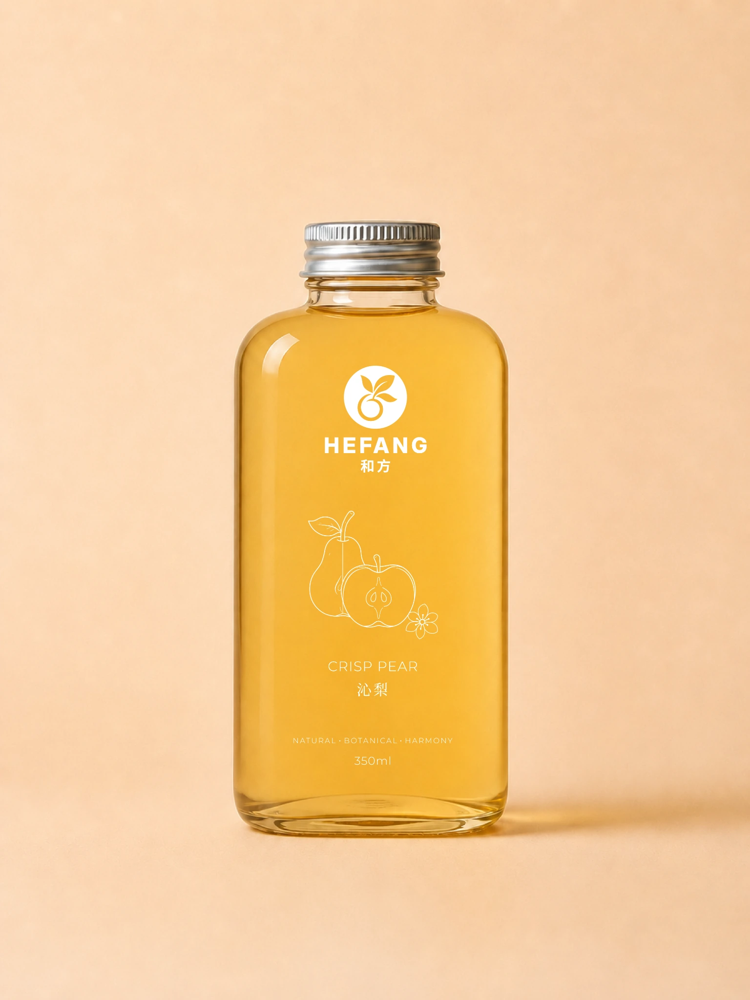
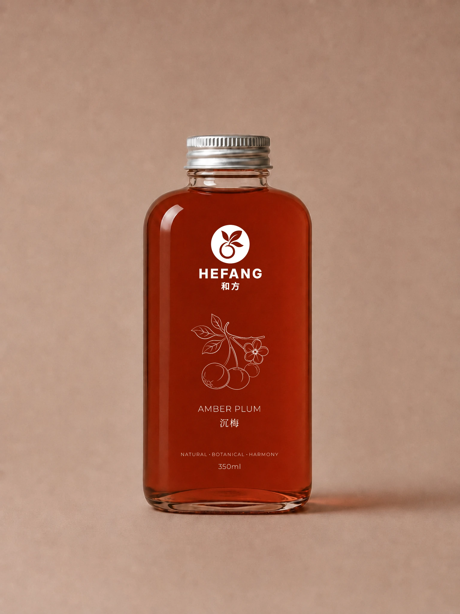
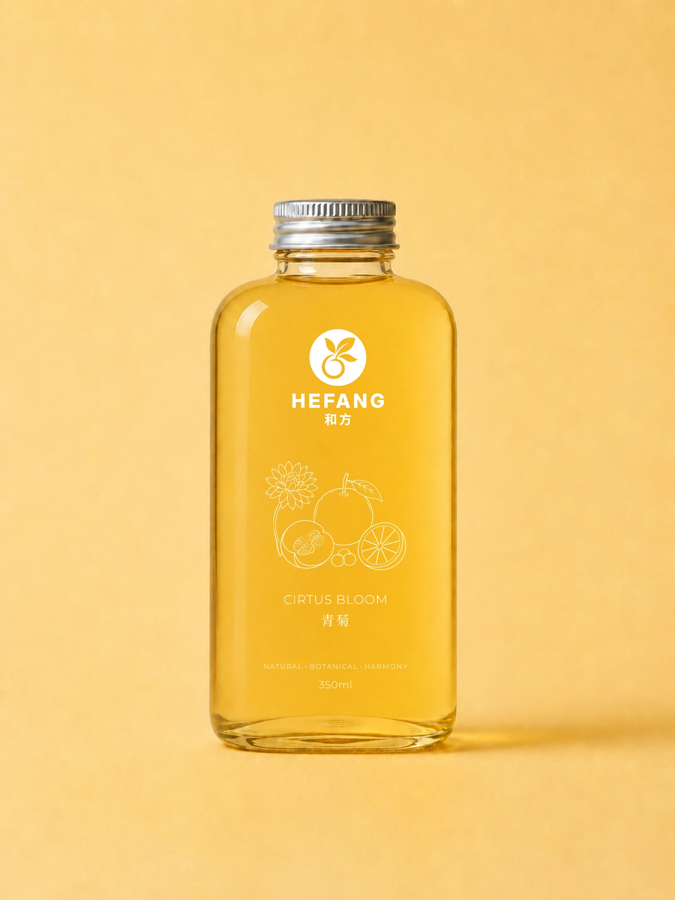
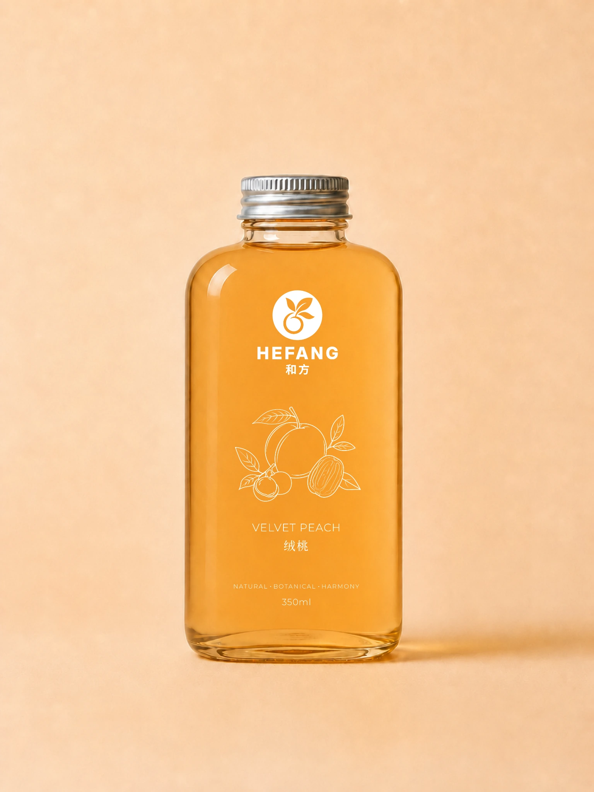
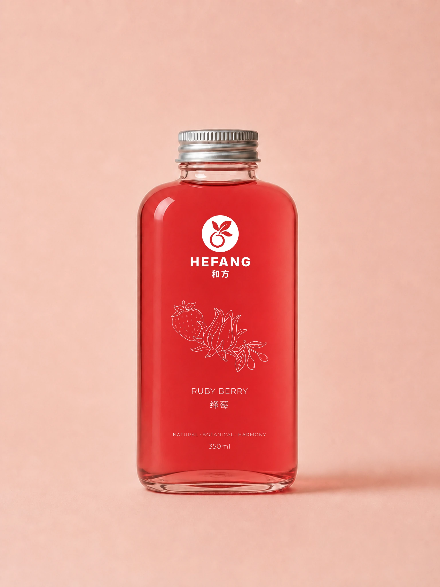

THE HEFANG COLLECTION
Five blends.
Five blends.
Find the one for you.
FIVE RECIPES / 和方
Five botanical drinks, each with its own taste and mood. Choose one to see how it tastes, what is inside, and why we made it.




From fresh fruit
to your bottle.
All five drinks follow the same careful process. The cooking time changes with each recipe, but the goal stays the same: keep the fruit fresh-tasting and let every ingredient be easy to notice.
-
FRESH START
Select and wash
We check the fresh fruit, wash it well and prepare it for cooking.
-
MEASURE & PREPARE
Prepare the ingredients
The fruit is cut, the dried ingredients are rinsed, and everything is measured for each recipe.
-
GENTLE HEAT
Gently simmer
We simmer the ingredients slowly instead of boiling them hard, so the flavour stays light and balanced.
-
COOL & BOTTLE
Strain, cool & bottle
The drink is strained, cooled and bottled, ready to enjoy.
We describe taste, ingredients and traditional inspiration. HEFANG drinks are not medicines and do not promise health results.
Choose a blend.
We’ll take it from there.
Pick one below. We’ll turn it into a ready-to-send message for Instagram, then you can send it our way.
- 01CHOOSE
- 02MESSAGE
- 03SEND
01
Pick the one you’re in the mood for.
GOOD TO KNOW
A few things worth asking.
Choose a topic, then open a question. We’ll keep the answer clear and simple.
HEFANG / 和方
HEFANG brings familiar fruit and traditional Chinese ingredients into modern botanical drinks. Each blend is designed around a clear taste, with every ingredient given a simple role.
HEFANG / 和方
Fresh fruit is checked, washed and cut. Dried ingredients are rinsed and measured. The blend is gently simmered, strained, cooled and bottled.
HEFANG / 和方
Amber Plum contains oolong tea and may contain caffeine. The other four current recipes do not include tea leaves.
HEFANG / 和方
Start with the taste profile. Crisp Pear is gentle, Amber Plum is deep, Citrus Bloom is light, Velvet Peach is warm, and Ruby Berry is bright and tart.
HEFANG / 和方
No. HEFANG is an everyday botanical drink, not a medicine.
HEFANG / 和方
Choose a blend in How to Order, copy the prepared message, then open Instagram to send it to @my.hefang. We’ll confirm the current availability and ordering details with you.